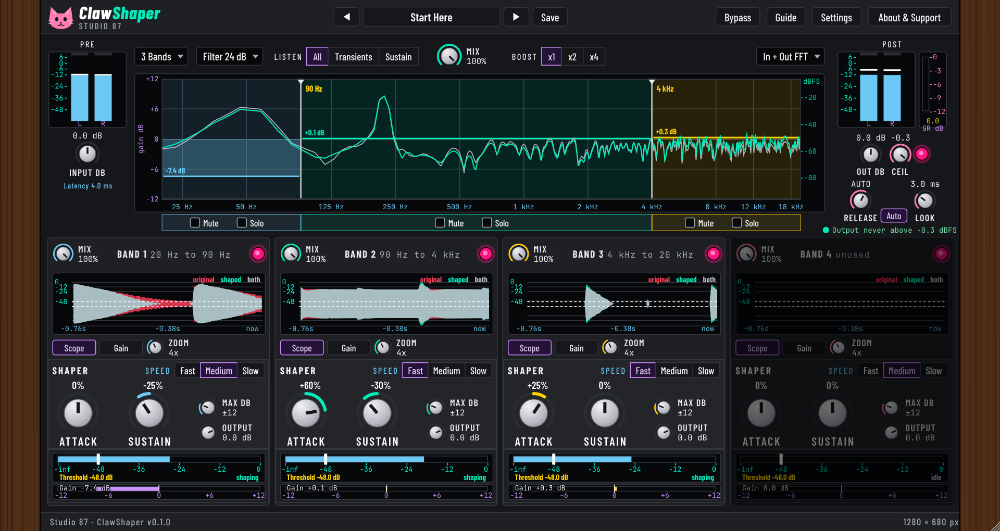

ClawShaper
Manual for version 0.1.0. Studio 87. Free and open source (AGPL-3.0-or-later). Collects nothing, never uses the network.
A multiband transient shaper with a safety limiter. It turns the punch (attack) and the tail (sustain) of your sound up or down, in up to four bands, and it reacts to changes in level, not to the absolute level.
Quick start
- Put ClawShaper on a drum or bass track. Pick a preset (for example Kick Snap) or start from Start Here.
- Choose how many bands (1 to 4) and drag the crossover lines in the big display to split the sound where you want.
- In a band: Attack up gives more punch, down softens it. Sustain up gives longer tails, down tightens. Use Listen to hear only the attack or only the sustain part.
- Drag the white Threshold slider on a band's level meter: below it nothing is shaped, so quiet noise is not boosted.
- Compare with Bypass (B). The dry signal is delayed to match. The limiter is always last and holds the Ceiling.
The window

| Control | What it does | Range | Default |
|---|---|---|---|
| Preset arrows, name, Save | Open the preset browser. Double-click to rename your own presets. Save these settings as your own preset. Asks before overwriting. | ||
| Bypass | Bypass (B): hear the dry signal, delayed to match, to compare with the processed sound. The meters keep moving. | ||
| Guide, Settings, About | Short guide, info bubbles, power saving and colour look, and about. | ||
| Input dB | Input gain in dB, before everything else. The shaper reacts to level changes, not to the absolute level, so this mainly sets how hard the threshold and the limiter are hit. Double-click for 0. | -24 to 24 | 0 |
| Bands | Number of bands: 1 to 4. Each band shapes its own part of the sound. Drag the vertical dividers in the graph to place the crossovers. Unused bands are greyed out. | 1 to 4 | 4 |
| Filter (slope) | Crossover slope: how steeply the bands are separated, from 12 to 96 dB per octave. Default 24. Steeper keeps bands cleaner but rings a little more. The bands always add back flat. | 12 to 96 dB/oct | 24 dB |
| Listen | All: Hear the shaped result, as it will leave the plugin (Mix applies). Transients: Hear only the attack part of the shaped sound: the shaped sound minus its sustain part. Mix is ignored while listening. Sustain: Hear only the sustain part of the shaped sound (what is left after the attack part is taken away). Mix is ignored while listening. | All | |
| Mix | Mix: shaped sound against the untouched input (delayed to match, so there is no comb filtering). 100% is fully shaped, 0% is exactly the input. | 0 to 100 | 100 |
| Boost | x1: Normal range (default). x2: Double: Attack and Sustain push twice as many dB per percent. x4: Four times: extreme shaping. Raise Max dB on a band to let it go further. The limiter still holds the Ceiling. | x1 | |
| FFT | Spectrum behind the bands. In + Out shows the input in grey and the output in green. The scale on the right is dBFS. | In + Out | |
| Pre and Post meters | Level before the shaper (after the Input gain below). Two bars, left and right, in dB: the bar is the average level, the white line is the peak. Blue is safe, purple is the warning zone, pink is clipping. The cap stays pink after a clip; click to clear it. Level after the limiter and Output gain. Two bars in dB: average level with a white peak line. Blue is safe, purple is the warning zone, pink is clipping. The cap stays pink after a clip; click to clear it. | ||
| Frequency display | Frequency view, 20 Hz to 20 kHz. Drag the vertical dividers to move the crossovers. The coloured line in each band is the gain the shaper applies right now (left scale, -12 to +12 dB). Right scale: spectrum in dBFS. | ||
| Out dB | Output gain in dB, after the Mix and before the limiter, so you can push the sound into the limiter. Double-click for 0. | -24 to 24 | 0 |
| Ceil | Limiter ceiling in dB, -12 to 0. Nothing leaves the plugin above this level. Default -0.3. | -12 to 0 | -0.3 |
| Lim | Limiter on or off. A lookahead limiter at the very end: nothing leaves the plugin above the Ceiling, whatever the Mix. | on or off | on |
| Release | Limiter release in ms: how fast the limiter lets go after a peak. Used when Auto is off. 5 to 500 ms. | 5 to 500 ms | Auto |
| Auto | Auto release: the limiter lets go slowly after a hard hit and quickly after a light one. Switch it off to set the release by hand. | on | |
| Look (lookahead) | Lookahead in ms, 1 to 7.5 (default 3). The limiter sees peaks this long before they play, so it can turn down smoothly. Longer is cleaner, shorter is lower latency. It sets the reported latency. | 1 to 7.5 ms | 3 |
| Limiter GR meter | Limiter gain reduction right now, in dB. Scale 0 to -12. The number below is the current value. | ||
| Band Mix | Mix: shaped band against the untouched band (aligned in time). 100% is fully shaped. | 0 to 100 | 100 |
| Band power | power. Off lets the band pass untouched (it still goes through the crossover). | on or off | on |
| Mute, Solo | Mute removes a band from the output; Solo plays only the soloed bands. The strips under the display follow the crossovers. | off | |
| Scope and Gain | Transient picture of this band. Scope: red is the original band, green is the shaped band, grey is where they overlap, as a waveform shape in dB over the last seconds. Gain: how much the band was turned up or down over time, in dB. Choose with the buttons below; Zoom changes the time span. | Scope | |
| Zoom | Zoom the time axis of the display, 1x to 8x. | 1x to 8x | 4x |
| Speed | Fast: Fast detectors: for short clicks, hats and snappy drums. Medium: Medium detectors: a good start for most sounds. Slow: Slow detectors: for long bass notes, pads and lead tails. | Medium | |
| Attack | Attack. Plus makes the first hit of each sound louder (more snap and punch). Minus softens it. 0 leaves it alone. Double-click for 0. | -100 to 100 % | 0 |
| Sustain | Sustain. Plus makes what comes after the hit louder (longer, fuller tails). Minus makes it shorter and tighter. 0 leaves it alone. Double-click for 0. | -100 to 100 % | 0 |
| Max dB | Max gain: the most this band can be turned up or down by the shaper, in dB (0 to 48, default 12). Keeps strong settings from running away. | 0 to 48 dB | 12 |
| Band Output | Output gain in dB, after the shaper and before the bands are added together. Double-click for 0. | -24 to 8 dB | 0 |
| Level meter and Threshold | Band level in dB (before shaping) with the Threshold slider. Drag the white slider: below it the shaper does nothing, so quiet noise is not boosted. The word on the right says whether the shaper is working right now. Scale in dB. | -60 to 0 dB | -48 dB |
| Gain meter | Gain change of this band: how many dB the shaper is turning the band up (right, gold) or down (left, purple) right now. Scale -12 to +12 dB. | -12 to +12 dB |
How it works
- Each band has a fast and a slow level follower. Their difference in dB says whether a hit is starting (attack) or fading (sustain). Only that difference matters, so the same settings work at any level.
- Attack and Sustain set how many dB the band is turned up or down. Max dB is a soft limit on that gain. Boost (x1, x2, x4) multiplies the strength of both.
- Speed sets how quickly the followers react (Fast, Medium, Slow). Low bands are automatically slower so a steady bass note is not mistaken for hits.
- The audio is delayed by 1 ms against the detector so the gain is already up when a hit arrives. Mix 0% is the delayed input, unchanged.
- The limiter (lookahead 1 to 7.5 ms, Auto or manual release) is the last stage at every setting, so the output never goes above the Ceiling.
The detector, the gain law and all time constants are our own design; they are not copied from any commercial product.
Latency
The plugin reports its latency to the host: 1 ms for the detector plus the limiter lookahead (4.0 ms at the default 3 ms lookahead). It is shown under the Pre meter. Mix and Bypass stay in time.
Keyboard and mouse
| B | Bypass on or off |
| [ ] | Previous and next preset |
| Knobs | Drag up or down, mouse wheel. Hold Shift for fine steps. Double-click to reset. |
| Threshold slider | Drag, mouse wheel, double-click to reset to -48 dB. |
| Crossover lines | Drag in the big display; double-click to reset. |
| Window | Drag a corner; it keeps its proportions. Double-click the wood to return to 100%. |
| Presets | Save stores your own preset in your user data folder (Studio 87/ClawShaper/presets). They are only ever on your computer. |
Install and uninstall
- Linux: unpack the zip, run
install.sh(copies the VST3 to~/.vst3).uninstall.shremoves it. - Windows: run the installer. It adds an uninstaller. Close your DAW first.
- macOS: open the package. The build is not notarised, so macOS may ask you to allow it in System Settings, Privacy and Security.
After installing, rescan plugins in your host.
Licence and thanks
AGPL-3.0-or-later. Built with JUCE (AGPLv3). Fonts: Barlow Condensed and JetBrains Mono, SIL Open Font Licence 1.1. Source: github.com/SpeakingColors/clawshaper.